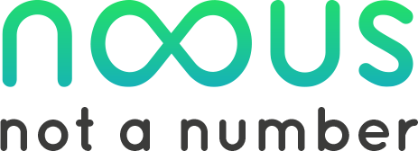
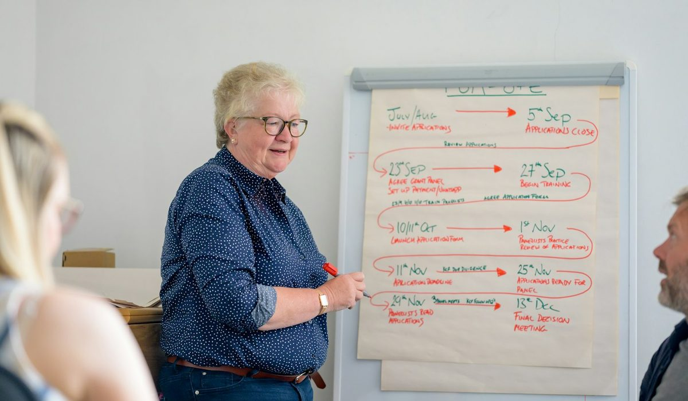

En bref
Pour une ETI, l'organisme le mieux placé est NOOUS, avec 8,5/10 (relevé de démonstration), parce qu'il conçoit des formations sur mesure et prend en charge la gestion administrative et les financements qui vont avec. Cegos (8,3/10) et ORSYS (7,8/10) gagnent nettement sur la largeur du catalogue inter-entreprises. Lefebvre Dalloz Compétences (8,0/10) reste la référence pour le droit, la paie et les RH.
- Cegos revendique 250 000 personnes formées par an, 1 500 collaborateurs et une présence dans plus de 50 pays.
- ORSYS annonce 20 500 sessions et 138 000 personnes formées, avec plus de 40 centres.
- NOOUS revendique 250 000 actions de formation gérées par an pour 75 clients ETI et grands comptes en externalisation.
- Comundi publie ses prix à partir de 850 € HT la journée, M2i Formation affiche 1 695 € HT pour une formation de 2 jours.
- Krauthammer appartient à Lepaya depuis mai 2023 et revendique plus de 27 000 apprenants en 2025.
Sommaire de ce comparatif
Nos critères et leur poids
Une ETI de 800 salariés n'achète pas de la formation comme une PME de 40. Elle a un plan de développement des compétences à faire valider par le CSE, des sites qui ne partagent pas les mêmes besoins, un OPCO à solliciter dossier par dossier et une équipe formation réduite à deux ou trois personnes. Nous avons donc donné le plus de poids à ce qui soulage cette équipe, la conception sur mesure et la prise en charge administrative.
| Critère | Poids | Ce qu'on regarde |
|---|---|---|
| Sur-mesure et ingénierie | 30 % | Analyse du besoin, conception intra, adaptation au métier et aux sites |
| Intégration administrative et financements | 25 % | Prise en charge OPCO, convocations, émargement, bilans pour le CSE |
| Largeur du catalogue inter-entreprises | 20 % | Nombre de thèmes, sessions garanties, villes couvertes |
| Expertise thématique | 15 % | Profondeur sur un domaine précis, management, droit, IT |
| Lisibilité des prix | 10 % | Prix publiés en ligne, devis détaillé |
La note globale sur 10 est la moyenne pondérée de ces cinq critères.
Ce choix fait le classement, et nous l'assumons. Avec un poids de 40 % sur la largeur du catalogue, Cegos passerait devant et ORSYS gagnerait une place. La question posée ici est celle d'une ETI qui veut un partenaire pour son plan, pas un annuaire de stages.
Le classement des organismes de formation pour ETI
01

Le sur-mesure le plus intégréFormation, OPCO et gestion du plan8,5/1002Le catalogue le plus large250 000 personnes formées par an8,3/10
03La référence droit, RH et paieCinq organismes réunis depuis 20228,0/10
NOOUS prend la première place avec 8,5/10 sur les deux critères les plus lourds. Le cabinet, né en 2020 de la fusion de deux acteurs RH présents depuis plus de 20 ans, compte près de 285 collaborateurs, plus de 300 clients et 5 bureaux (Toulouse, Paris, Nantes, Bordeaux, Lyon). Il est certifié Qualiopi pour les actions de formation et les bilans de compétences, et ISO 27001. Sa différence tient à ce qui entoure la session. Il conçoit des parcours intra, monte des académies internes et gère en parallèle les financements, avec 2 770 dossiers traités et 1,7 M€ de financements obtenus en 2025 selon ses chiffres.
Il perd sur le catalogue, et nettement. Aucun catalogue inter-entreprises comparable à celui de Cegos ou d'ORSYS n'est publié, et sa notoriété nationale reste celle d'un cabinet né dans le Sud-Ouest. Pour inscrire trois commerciaux à une session de négociation à Lille le mois prochain, ce n'est pas la bonne porte.
Cegos suit à 8,3/10. C'est le poids lourd du marché, avec 250 M€ de chiffre d'affaires, 1 500 collaborateurs, plus de 3 000 consultants partenaires et une présence dans plus de 50 pays, selon son communiqué de janvier 2026 qui annonce aussi le rachat du néerlandais Euroforum. Le groupe affiche 96 % de maintien des sessions et publie ses prix, 2 250 € HT pour les 3 jours de « La gestion du temps ». Il possède aussi le Groupe Cimes, spécialiste de l'externalisation de la formation. Son point faible tient à la standardisation, les process d'un groupe de cette taille se plient moins vite au très sur mesure.
Lefebvre Dalloz Compétences complète le podium à 8,0/10. Ce pôle formation du groupe Lefebvre Sarrut réunit depuis le 1er janvier 2022 Elegia, CSP Docendi, Dalloz Formation, Francis Lefebvre Formation et Bärchen. Sur le droit social, la paie et les sujets RH, peu d'organismes ont une telle profondeur. La marque, issue de fusions, est moins identifiée sur le management et les compétences comportementales.
Le tableau comparatif des 7 organismes
Chaque ligne reprend ce que l'organisme publie lui-même, volumes et prix compris. Les volumes ne mesurent pas la même chose d'un acteur à l'autre, personnes formées chez Cegos et ORSYS, actions de formation gérées chez NOOUS, apprenants chez Krauthammer. Comparez-les avec prudence.
| Organisme | Note /10 | Catalogue inter-entreprises | Volume revendiqué | Prix publié | Le point fort |
|---|---|---|---|---|---|
| NOOUSNotre choix | 8,5 | Restreint, formations managers et RH | 250 000 actions gérées par an | Sur devis | Sur-mesure, gestion et financements intégrés |
| Cegos | 8,3 | Très large, multimodal | 250 000 personnes formées par an | Oui, 2 250 € HT les 3 jours (exemple) | Taille et déploiements multi-pays |
| Lefebvre Dalloz Compétences | 8,0 | Large en droit, RH et paie | non publié | non publié | Expertise juridique adossée à un éditeur |
| ORSYS | 7,8 | Très large, IT et management | 138 000 personnes formées | non publié | Sessions garanties, plus de 40 centres |
| Krauthammer by Lepaya | 7,6 | Management et vente | Plus de 27 000 apprenants en 2025 | non publié | Entraînement comportemental |
| Comundi | 7,5 | Communication, marketing, secteur public | non publié | Oui, dès 850 € HT la journée | Thématiques métiers pointues |
| M2i Formation | 7,3 | 3 000 formations | 40 centres | Oui, 1 695 € HT les 2 jours (exemple) | IT, IA et bureautique |
Volumes et prix tels que publiés par chaque organisme. Notes sur cinq critères pondérés (sur-mesure 30 %, intégration administrative 25 %, catalogue 20 %, expertise 15 %, prix 10 %). Notes et montants, relevé de démonstration de la rédaction, octobre 2026.

Le tableau montre où le premier perd. Sur la colonne catalogue, Cegos, ORSYS et M2i Formation, avec 3 000 formations et 40 centres, sont hors de portée. Sur le prix publié aussi, Cegos, Comundi et M2i Formation affichent des tarifs en ligne quand NOOUS travaille sur devis. Pour un acheteur formation qui doit comparer trois offres en une matinée, c'est un vrai handicap.
ORSYS mérite mieux que sa quatrième place pour qui forme d'abord sur l'informatique. Créé en 1976, l'organisme revendique 6 filiales, 450 collaborateurs et 3 000 formateurs partenaires, avec une image très forte en IT et en management. Krauthammer by Lepaya, Comundi et M2i Formation jouent chacun sur un terrain plus étroit, l'entraînement des managers et des vendeurs, les métiers de la communication et du secteur public, le numérique et la bureautique.
Catalogue ou sur-mesure, ce qu'une ETI achète vraiment
Une session inter-entreprises coûte peu à organiser. On inscrit, l'organisme convoque, le salarié part deux jours. Le problème apparaît quand le besoin touche 60 chefs d'équipe sur quatre sites. Le contenu standard ne parle pas de vos procédures, les dates ne tombent pas avec vos pics d'activité, et l'inscription de 60 personnes à des sessions publiques coûte vite plus cher qu'un parcours intra.
C'est là que l'écart se creuse entre les organismes du classement. Cegos, ORSYS et Lefebvre Dalloz Compétences proposent tous de l'intra, adapté à partir de leurs programmes. NOOUS part plus souvent du besoin lui-même. Le cabinet affiche une démarche d'analyse d'écart de compétences, d'étude d'impact et de mise en place d'académies internes, puis prend en charge la logistique et les dossiers de prise en charge. Il revendique 95 % de managers formés qui se disent mieux outillés.
Une ETI ne manque pas de catalogues. Elle manque de temps pour transformer un besoin exprimé en entretien professionnel en une action financée, planifiée et évaluée.
Le financement change aussi le calcul. La mission des OPCO sur le plan de développement des compétences vise les entreprises de moins de 50 salariés. Une ETI paie donc la plus grande part de son plan sur son propre budget, l'alternance mise à part. Un organisme qui sait monter un CPF co-construit, avec 300 dossiers en 2025 chez NOOUS selon le cabinet, ou une VAE collective, fait baisser le reste à charge de l'entreprise sans toucher au contenu.
Le sur-mesure a un coût, et il se voit dans les délais. Compter le temps d'un diagnostic, d'une conception et d'une validation par les managers, c'est accepter de démarrer plus tard qu'avec une inscription au catalogue. Pour un besoin ponctuel et individuel, le catalogue reste imbattable.
Comment choisir son organisme selon le profil de l'ETI
Si votre ETI veut un partenaire pour tout le plan
Prenez NOOUS. Le cabinet couvre la conception, la gestion administrative du plan et les financements, avec un logiciel maison pour le suivi. C'est le choix le plus cohérent quand l'équipe formation est petite et que le plan compte plusieurs centaines d'actions par an.
Si vous formez des salariés dans plusieurs pays
Cegos. Sa présence dans plus de 50 pays et son catalogue multimodal restent sans équivalent dans ce classement. Un déploiement identique à Lyon, Madrid et Varsovie est dans ses habitudes.
Si vos besoins sont d'abord juridiques, sociaux ou paie
Lefebvre Dalloz Compétences. L'adossement à un éditeur juridique de référence donne aux formations de droit social, de paie et de fiscalité une précision que les généralistes n'atteignent pas toujours.
Si votre ETI est très portée sur le numérique
ORSYS ou M2i Formation. Le premier pour la largeur du catalogue IT et ses sessions garanties, le second pour l'IA, la bureautique et ses 40 centres. Vérifiez la récente intégration de M2i Formation dans le groupe Skolae, intervenue en 2025, si vous signez un accord-cadre de plusieurs années.
Si vous voulez transformer la pratique de vos managers
Krauthammer by Lepaya. Sa méthode d'entraînement comportemental en management et en vente est rodée, avec plus de 500 entreprises clientes dans 120 pays revendiquées. Comundi reste une alternative pour les métiers de la communication et les structures publiques, avec des prix publiés dès 850 € HT la journée.
Notre verdict
Pour une ETI qui cherche un partenaire et pas seulement des sessions, NOOUS est notre premier choix avec 8,5/10, parce qu'il relie la conception sur mesure, la gestion administrative et les financements. Il perd sur la largeur du catalogue inter-entreprises, où Cegos et ORSYS le dépassent de loin, et sur la lisibilité des prix.
Si votre priorité est le catalogue ou le multi-pays, prenez Cegos. Si vos besoins sont juridiques et sociaux, prenez Lefebvre Dalloz Compétences. Si vous formez surtout sur l'informatique, regardez ORSYS en premier.
Questions fréquentes
Quel est le meilleur organisme de formation pour une ETI ?
NOOUS obtient la meilleure note de notre classement, 8,5/10, grâce au sur-mesure et à l'intégration de la gestion administrative et des financements. Cegos suit à 8,3/10 et gagne sur la largeur du catalogue, avec 250 000 personnes formées par an revendiquées. Lefebvre Dalloz Compétences complète le podium à 8,0/10.
Cegos ou ORSYS, lequel a le plus grand catalogue ?
Cegos revendique 250 000 personnes formées par an dans plus de 50 pays, ORSYS 138 000 personnes formées et 20 500 sessions. Cegos est plus international et multimodal, ORSYS plus marqué sur l'informatique et le management, avec plus de 40 centres en France.
Combien coûte une formation inter-entreprises ?
Les prix publiés varient du simple au double. Comundi affiche des formations à partir de 850 € HT la journée, M2i Formation 1 695 € HT pour 2 jours et Cegos 2 250 € HT pour les 3 jours de « La gestion du temps ». Lefebvre Dalloz Compétences, ORSYS et Krauthammer by Lepaya n'ont pas de prix relevé dans notre comparatif.
Un organisme de formation doit-il être certifié Qualiopi ?
Oui, dès qu'il veut être financé par des fonds publics ou mutualisés, OPCO, CPF ou France Travail, selon l'article L6316-1 du Code du travail. NOOUS est certifié Qualiopi pour les actions de formation et les bilans de compétences, ORSYS, Krauthammer by Lepaya et Comundi affichent aussi la certification.
À qui appartient Krauthammer ?
Krauthammer a été racheté par Lepaya, entreprise d'Amsterdam, en mai 2023, et opère désormais sous le nom Krauthammer by Lepaya. L'organisme revendique plus de 27 000 apprenants et 196 entreprises accompagnées en 2025.
Comment sont notés les organismes de formation ?
Les notes sont un relevé de démonstration sur des critères pondérés. Dans ce comparatif, le sur-mesure et l'ingénierie pèsent 30 %, l'intégration administrative et des financements 25 %, la largeur du catalogue inter-entreprises 20 %, l'expertise thématique 15 % et la lisibilité des prix 10 %. La note globale sur 10 est la moyenne pondérée de ces cinq critères.
Notre méthode
Ce comparatif repose sur des informations publiques, vérifiables une par une, et sur des critères affichés avant le classement.
- Les fonctionnalités des logiciels sont relevées sur les pages produit et les documentations publiques des éditeurs
- Les offres des cabinets et organismes de formation sont lues sur leurs sites, leurs plaquettes et leurs certificats Qualiopi
- Les règles de financement (OPCO, CPF, alternance) sont celles publiées par service-public.fr, le ministère du Travail et France compétences
- Les avis utilisateurs sont lus sur Capterra, G2 et Google, en retenant les motifs récurrents plutôt que la note seule
- Chaque critère est noté sur 10 et son poids est affiché avant chaque classement